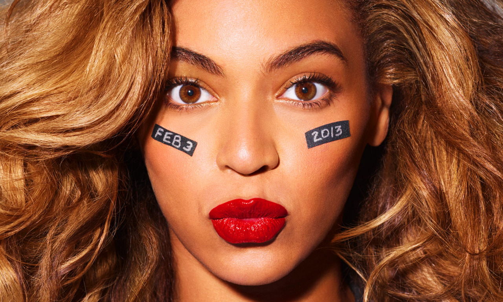

 Beyoncé Giselle Knowles-Carter (born September 4, 1981) is an American singer, songwriter, actress, director, record producer and dancer. Born and raised in Houston, Texas, Beyoncé performed in various singing and dancing competitions as a child. She rose to fame in the late 1990s as lead singer of the R&B girl-group Destiny's Child. Managed by her father, Mathew Knowles, the group became one of the best-selling girl groups in history. Their hiatus saw Beyoncé's theatrical film debut in Austin Powers in Gold member (2002) and the release of her first solo album, Dangerously in Love (2003). The album established her as a solo artist worldwide, debuting at number one on the US Billboard 200 chart and earning five Grammy Awards, and featured the Billboard Hot 100 number-one singles "Crazy in Love" and "Baby Boy".
Throughout her career, Beyoncé has sold over 100 million records worldwide as a solo artist, and a further 60 million records with Destiny's Child, making her one of the best-selling music artists of all time. She is a multi-platinum, Grammy-Award winning recording artist, who is acclaimed for her thrilling vocals, videos, and live concert shows. The Recording Industry Association of America recognized Beyoncé as the Top Certified Artist in America during the 2000s decade. In 2009, Billboard named her the Top Radio Songs Artist of the Decade and the Top Female Artist of the 2000s decade. Beyoncé is the most nominated woman in the award's history.